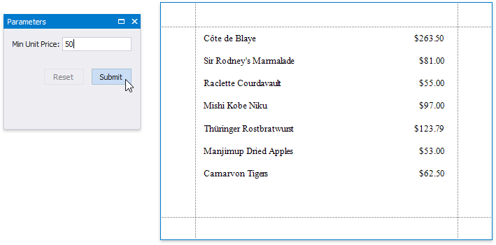

Conditionally Filter Report Data
This document describes how to filter a report's data based on a specific condition.
Warning
Use the approach below if expression bindings are not enabled in the Report Designer (the Property Grid does not provide the Expressions  tab ).
tab ).
See Conditionally Filter Report Data if expression bindings are enabled in the Report Designer (the Property Grid provides the Expressions  tab).
tab).
Switch to the Field List, right-click the Parameters section and add a new report parameter.

Specify the parameter's description in Print Preview and set its type to Number (Integer).

Click the Detail band's smart tag, and in its actions list, click the Formatting Rules property's ellipsis button. In the invoked Formatting Rules Editor, click the Edit Rule Sheet button.

In the invoked Formatting Rule Sheet Editor, click the plus button to create a new formatting rule. Set the Visible property to False and click the Condition property's ellipsis button.

In the invoked Condition Editor, specify the required visibility condition.

Click OK to save the changes and close the dialog. Then, click Close to quit the Formatting Rule Sheet Editor.
In the Formatting Rules Editor, you can see the created rule (called formattingRule1), which should be moved to the list of active rules on the right using the arrow buttons in the center of the dialog box.

In this editor, you can also customize the precedence of formatting rules using the up and down arrow buttons on the right of the dialog box. The rules are applied in the same order that they appear in the list, and the last rule in the list has the highest priority.
Switch to Print Preview to see the result.
